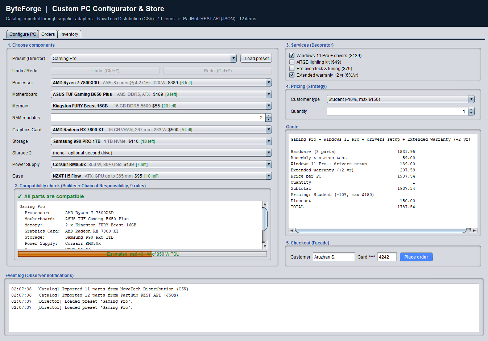
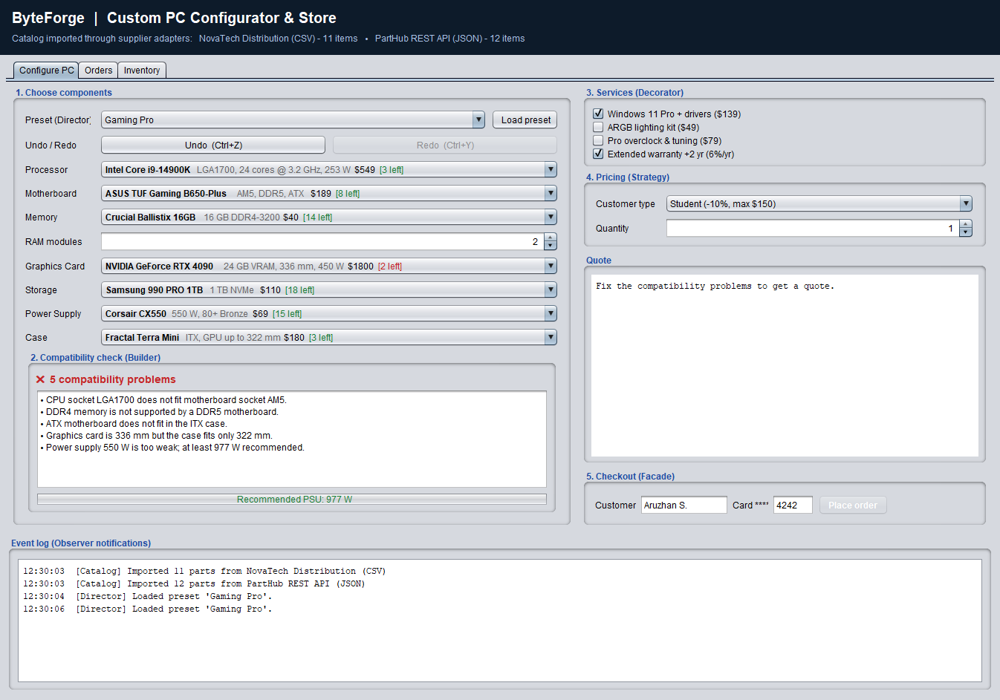
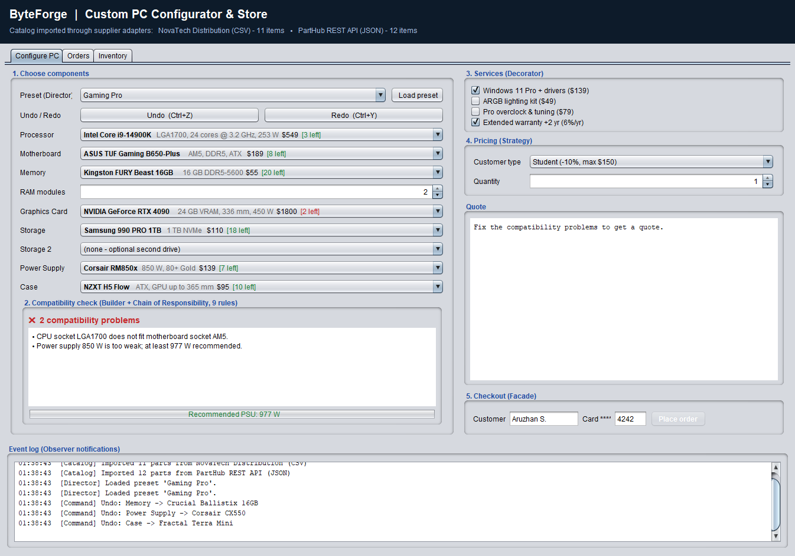
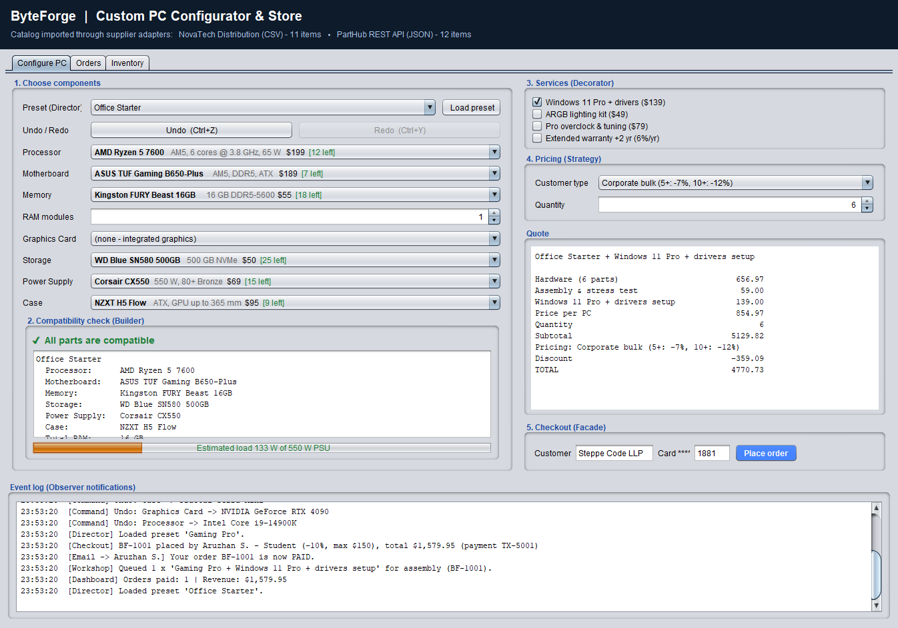
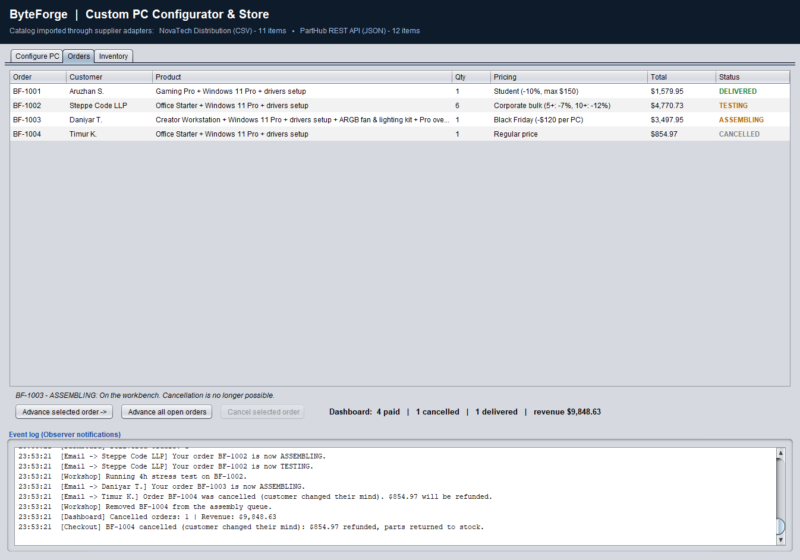
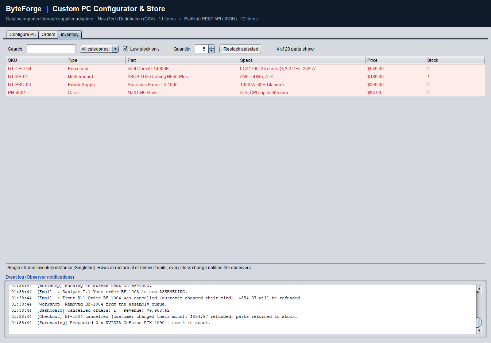
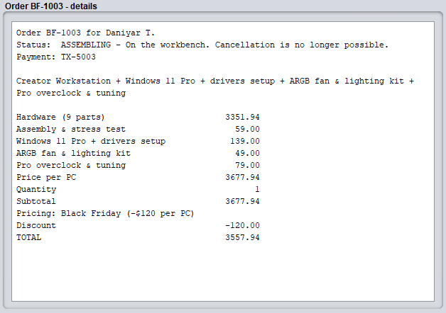

| Team members | Patterns implemented |
|---|---|
| Student 1: [Full name], [group] | Singleton, Factory, Adapter, State |
| Student 2: [Full name], [group] | Builder (+ Director), Decorator, Command |
| Student 3: [Full name], [group] | Strategy, Observer, Facade, Chain of Responsibility |
| Supervisor | [Senior Lecturer name] |
Buying a custom-built computer is error-prone. A processor only fits a motherboard with the same socket, memory must match the board's DDR generation, a long graphics card may not fit into a compact case, and an under-sized power supply makes the whole system unstable. Small computer shops usually check this by hand, take their part lists from several wholesalers in different formats, and price the same machine differently for students, companies and seasonal campaigns.
ByteForge is a desktop application for such a shop. A customer chooses parts (or starts from a ready-made preset), the system instantly checks hardware compatibility and power consumption, lets the customer add services such as an operating-system installation or an extended warranty, calculates the price with the correct pricing policy, and then tracks the order from payment through assembly, testing and delivery.
| Item | Choice |
|---|---|
| Language | Java 11+ (developed and tested with JDK 17, Temurin) |
| User interface | Java Swing with the Nimbus look and feel |
| Build | Plain javac (no external libraries); run.bat script; ready-made IntelliJ IDEA project with run configurations |
| Testing | Own dependency-free test runner (run.bat --test), 48 automated tests |
| Diagrams | UML class and sequence diagrams (Mermaid notation) |
| Size | 43 source files, about 4,000 lines of code, 12 packages |
The code is organised by responsibility, and each package is home to one pattern. The user interface (ui) and the console demo talk only to StoreFacade; the facade coordinates every other subsystem.
| Package | Responsibility | Pattern |
|---|---|---|
model | Hardware parts: Component, Cpu, Motherboard, Ram, Gpu, Storage, PowerSupply, PcCase | — |
adapter | Import parts from suppliers with foreign formats | Adapter |
factory | Create the right Component subclass from a neutral record | Factory |
inventory | The single stock ledger of the shop | Singleton (+ Observer subject) |
builder | Assemble and validate a Computer; presets | Builder + Director |
decorator | Add optional paid services to a computer | Decorator |
strategy | Interchangeable pricing policies | Strategy |
observer | Orders, order status and event listeners | Observer |
facade | One simple API for the UI: catalog, quote, checkout, tracking | Facade |
command | Undoable configuration changes and their history | Command |
state | Behaviour of each step of the order life cycle | State |
rules | Hardware compatibility rules linked into a chain | Chain of Responsibility |
ui | Swing window and the screenshot tour | — |
test/ | 48 automated tests for all patterns | — |
Figure 2.1 – High-level architecture: which pattern lives where and who calls whom.
Figure 2.2 – Main classes and their relations (details per pattern in Chapter 3).
For every pattern we describe the problem it solves in ByteForge, the participating classes, a UML class diagram and the key part of the source code. Full source code is in the attached ZIP archive.
| # | Pattern | Category | Main classes | Author |
|---|---|---|---|---|
| 1 | Singleton | Creational | Inventory | Student 1 |
| 2 | Factory | Creational | ComponentFactory, ComponentRecord | Student 1 |
| 3 | Adapter | Structural | SupplierFeed, NovaTechCsvAdapter, PartHubApiAdapter | Student 1 |
| 4 | Builder | Creational | PCBuilder, Computer, BuildDirector | Student 2 |
| 5 | Decorator | Structural | PCProduct, BasePC, AddOnDecorator, AddOns.* | Student 2 |
| 6 | Strategy | Behavioral | PricingStrategy, PricingStrategies.* | Student 3 |
| 7 | Observer | Behavioral | Order, OrderObserver, StockObserver, Listeners.* | Student 3 |
| 8 | Facade | Structural | StoreFacade | Student 3 |
| 9 | Command | Behavioral | Command, ConfigCommands.*, CommandHistory | Student 2 |
| 10 | State | Behavioral | OrderState, OrderStates.*, Order (context) | Student 1 |
| 11 | Chain of Responsibility | Behavioral | CompatibilityRule, CompatibilityRules.* | Student 3 |
Inventory CreationalProblem. The shop has exactly one stock of physical parts. The configurator, the checkout, the inventory screen and the low-stock alert must all read and change the same quantities; two separate copies would let two customers buy the last RTX 4090.
Solution. Inventory has a private constructor and is reachable only through getInstance(). We use the initialization-on-demand holder idiom: the instance is created lazily the first time Holder is touched, and the JVM's class-loading rules make this thread-safe without synchronized on every call. All state-changing methods are synchronized, and reserve() is atomic: either every unit of an order is taken or nothing changes.
public final class Inventory {
private Inventory() { } // nobody else can call "new"
private static final class Holder { // loaded only on first use
private static final Inventory INSTANCE = new Inventory();
}
public static Inventory getInstance() { return Holder.INSTANCE; }
/** Either every unit is taken from stock or, if anything is short, nothing changes. */
public synchronized void reserve(List<Component> parts) {
Map<Component, Integer> needed = new LinkedHashMap<>();
for (Component c : parts) needed.merge(c, 1, Integer::sum);
for (Map.Entry<Component, Integer> e : needed.entrySet())
if (getStock(e.getKey()) < e.getValue())
throw new IllegalStateException("Not enough stock for " + e.getKey().getName());
for (Map.Entry<Component, Integer> e : needed.entrySet())
changeStock(e.getKey(), -e.getValue()); // notifies StockObservers
}
}
ComponentFactory CreationalProblem. Supplier data arrives as generic records ("type = GPU, lengthMm = 267 ..."). Seven concrete part classes exist, each with its own constructor and attributes. If the inventory loader called these constructors directly it would contain a large if/else over types and would have to change for every new part type.
Solution. ComponentFactory.create(ComponentRecord) is the only place that knows which concrete class matches a ComponentType and how to read its attributes. Clients receive the abstract Component. Creators are registered in an EnumMap, so a new part type (e.g. a CPU cooler) is added by registering one more creator function.
public final class ComponentFactory {
private final Map<ComponentType, Function<ComponentRecord, Component>> creators =
new EnumMap<>(ComponentType.class);
public ComponentFactory() {
creators.put(ComponentType.CPU, r -> new Parts.Cpu(
r.getSku(), r.getBrand(), r.getModel(), r.getPrice(), r.intAttr("tdp"),
r.attr("socket"), r.intAttr("cores"), r.doubleAttr("ghz")));
creators.put(ComponentType.GPU, r -> new Parts.Gpu(
r.getSku(), r.getBrand(), r.getModel(), r.getPrice(), r.intAttr("tdp"),
r.intAttr("vramGb"), r.intAttr("lengthMm")));
// ... MOTHERBOARD, RAM, STORAGE, PSU, CASE
}
public Component create(ComponentRecord record) {
Function<ComponentRecord, Component> creator = creators.get(record.getType());
if (creator == null) throw new IllegalArgumentException("No creator for " + record.getType());
return creator.apply(record);
}
}
Problem. The shop buys from two suppliers whose code we cannot change. NovaTech Distribution (a legacy wholesaler) only exports semicolon-separated text. PartHub (a modern REST API) returns JSON-like maps, uses its own category names ("graphics", "chassis"), prices in cents and different spec keys ("boardPower" instead of "tdp").
Solution. The store defines the target interface SupplierFeed. Two object adapters wrap the incompatible services and translate their data into neutral ComponentRecords. Inventory.importFrom() works with any SupplierFeed, so a third supplier needs only a new adapter.
public class PartHubApiAdapter implements SupplierFeed {
private final PartHubApiClient client; // the adaptee
public PartHubApiAdapter(PartHubApiClient client) { this.client = client; }
@Override public List<ComponentRecord> fetchRecords() {
List<ComponentRecord> records = new ArrayList<>();
for (Map<String, Object> p : client.getProducts()) {
ComponentType type = mapCategory((String) p.get("category")); // "graphics" -> GPU
records.add(new ComponentRecord((String) p.get("id"), type,
(String) p.get("manufacturer"), (String) p.get("name"),
((Integer) p.get("priceCents")) / 100.0, // cents -> dollars
(Integer) p.get("qty"),
mapSpecs(type, (Map<String, String>) p.get("specs")))); // rename keys
}
return records;
}
}
PCBuilder, Computer, BuildDirector CreationalProblem. A computer has eight kinds of parts; some are optional (graphics card), some repeat (RAM modules, drives). A constructor with ten parameters would be unreadable, and an object built field-by-field with setters could exist in an invalid state (e.g. Intel CPU on an AMD board).
Solution. PCBuilder collects parts through a fluent API. build() runs the CompatibilityChecker and only then creates an immutable Computer (its constructor is package-private, so the builder is the only way to obtain one). The GUI calls validate() after every change to show problems live. BuildDirector plays the Director role: it knows the recipes of the shop's three presets and returns a pre-filled builder that the customer can still modify.
// Director: a preset recipe
private PCBuilder gaming() {
return new PCBuilder()
.name("Gaming Pro")
.cpu(inventory.findBySku("NT-CPU-02")) // Ryzen 7 7800X3D
.motherboard(inventory.findBySku("NT-MB-01")) // B650, AM5, DDR5
.ram(inventory.findBySku("PH-1001"), 2) // 2 x 16 GB DDR5
.gpu(inventory.findBySku("PH-2002")) // Radeon RX 7800 XT
.addDrive(inventory.findBySku("PH-3001"))
.psu(inventory.findBySku("NT-PSU-02")) // 850 W
.pcCase(inventory.findBySku("PH-4001"));
}
// Builder: the product exists only if it is valid
public Computer build() {
List<String> issues = validate();
if (!issues.isEmpty()) throw new IncompatibleBuildException(issues);
return new Computer(this);
}
// validate() hands the builder to the chain of compatibility rules (Section 3.11)
public List<String> validate() {
return CompatibilityChecker.check(this, rules); // rules = CompatibilityRules.standardChain()
}
Problem. On top of the hardware the customer may order any combination of four services. Creating a subclass for every combination ("PC with Windows and RGB but no warranty") would mean 24 = 16 classes, and services must be chosen at runtime.
Solution. PCProduct is the common interface. BasePC (the concrete component) prices the hardware plus assembly. AddOnDecorator holds another PCProduct and adds its own name and price; concrete decorators can be stacked in any order. ExtendedWarranty shows a real benefit of decoration: its price is 6 % per year of everything it wraps, including the other add-ons.
public abstract class AddOnDecorator implements PCProduct {
protected final PCProduct wrapped;
protected AddOnDecorator(PCProduct wrapped) { this.wrapped = wrapped; }
protected abstract String addOnName();
protected abstract double addOnPrice();
@Override public String getDescription() { return wrapped.getDescription() + " + " + addOnName(); }
@Override public double getPrice() { return wrapped.getPrice() + addOnPrice(); }
}
public static class ExtendedWarranty extends AddOnDecorator {
private final int years;
@Override protected double addOnPrice() { // depends on what it wraps
return Math.round(wrapped.getPrice() * 0.06 * years * 100) / 100.0;
}
}
// Facade composes the chain at runtime from the ticked check boxes
PCProduct product = new BasePC(computer);
if (addOns.contains(AddOnOption.OS_INSTALL)) product = new AddOns.OsInstallation(product);
if (addOns.contains(AddOnOption.RGB)) product = new AddOns.RgbLighting(product);
if (addOns.contains(AddOnOption.WARRANTY)) product = new AddOns.ExtendedWarranty(product, 2);
Problem. The same PC is sold at different prices: full price, 10 % student discount capped at $150, volume tiers for companies (5+ machines −7 %, 10+ −12 %), and campaign sales such as "Black Friday, −$120 per PC". Hard-coding these rules in the checkout would produce a growing switch and break the Open/Closed principle.
Solution. Every policy implements PricingStrategy. The quote, the checkout and the Order (the contexts) just call pricing.total(unitPrice, qty). The user swaps strategies at runtime in a combo box, and a new campaign is a new class (or a new SeasonalSale instance) without touching existing code.
public interface PricingStrategy {
String getName();
double discount(double unitPrice, int quantity);
default double total(double unitPrice, int quantity) {
double subtotal = unitPrice * quantity;
return Math.round((subtotal - discount(unitPrice, quantity)) * 100) / 100.0;
}
}
public static class CorporateBulk implements PricingStrategy {
public double discount(double unitPrice, int quantity) {
double rate = quantity >= 10 ? 0.12 : quantity >= 5 ? 0.07 : 0.0;
return unitPrice * quantity * rate;
}
}
public static class Student implements PricingStrategy {
public double discount(double unitPrice, int quantity) {
return Math.min(unitPrice * quantity * 0.10, 150.0);
}
}
Problem. When an order changes status, several independent parties must react: the customer receives an e-mail, the workshop queues the build and runs a stress test, and the sales dashboard updates revenue. When stock runs low, purchasing must be warned. The order and the inventory should not know about any of these departments.
Solution. The pattern is used twice. Order is a subject for OrderObservers (CustomerNotifier, AssemblyDepartment, SalesDashboard); the Inventory singleton is a subject for StockObservers (LowStockAlert). Subjects keep a list of observers and push every change. Observers write to a log sink, which the GUI shows in the "Event log" panel. Adding an SMS notifier means writing one class and attaching it — no change to Order.
public class Order {
private final List<OrderObserver> observers = new CopyOnWriteArrayList<>();
public void attach(OrderObserver o) { observers.add(o); }
public void detach(OrderObserver o) { observers.remove(o); }
/** Called by the State objects (Section 3.10) on every step: push the change to all observers. */
public void changeState(OrderState next) {
OrderStatus old = state.getStatus();
state = next;
for (OrderObserver o : observers) o.onStatusChanged(this, old, next.getStatus());
}
}
public static class AssemblyDepartment implements OrderObserver {
public void onStatusChanged(Order order, OrderStatus oldStatus, OrderStatus newStatus) {
if (newStatus == OrderStatus.PAID)
log.accept("[Workshop] Queued " + order.getQuantity() + " x '"
+ order.getProduct().getDescription() + "' for assembly");
else if (newStatus == OrderStatus.TESTING)
log.accept("[Workshop] Running 4h stress test on " + order.getId());
else if (newStatus == OrderStatus.CANCELLED)
log.accept("[Workshop] Removed " + order.getId() + " from the assembly queue.");
}
}
StoreFacade StructuralProblem. Placing one order involves many steps across many subsystems: decorate the PC with add-ons, price it with the right strategy, authorize the card, reserve every part in the inventory, capture the payment (or release the card hold if stock is short), create the order, attach its observers and mark it paid. Putting this logic into Swing event handlers would couple the UI to every class in the system.
Solution. StoreFacade exposes a small API — loadCatalog(), getParts(), preset(), quote(), checkout(), advanceOrder(), cancelOrder(), orderDetails(), restock() — and hides the subsystems behind it. The Swing window, the console demo and the tests use only this class. The subsystems remain accessible on their own (e.g. unit tests can use PCBuilder directly), which is the usual property of a facade.
public Order checkout(String customer, String cardLast4, Computer computer,
Set<AddOnOption> addOns, PricingStrategy pricing, int quantity) {
Quote q = quote(computer, addOns, pricing, quantity); // Decorator + Strategy
String auth = payments.authorize(customer, cardLast4, q.getTotal()); // declined? stop here
List<Component> units = new ArrayList<>();
for (int i = 0; i < quantity; i++) units.addAll(computer.allParts());
try {
inventory.reserve(units); // Singleton, all-or-nothing
} catch (RuntimeException e) {
payments.voidAuthorization(auth); // release the card hold
throw e;
}
String tx = payments.capture(auth);
Order order = new Order(customer, q.getProduct(), quantity, pricing);
order.setPaymentId(tx);
orderObservers.forEach(order::attach); // Observer
orders.add(order);
order.advance(); // PLACED -> PAID (State), notifies everyone
return order;
}
Problem. While configuring a PC the customer experiments: tries a bigger graphics card, sees that the power supply is now too weak, changes the case, and then wants to go back. Without history every mistake must be repaired by hand. Loading a preset changes up to eight parts at once, and undoing it part by part would be tedious.
Solution. Every change is an object implementing Command with execute() and undo(). SelectPart stores the category, the old and the new part; ChangeRamModules stores the old and new count; Macro groups several commands (a preset load) so they are undone as one step. CommandHistory is the invoker with an undo stack and a redo stack (a new command clears redo, history is limited to 100 steps). The receiver is the ConfigurationEditor interface; the Swing window implements it, and the tests use a simple in-memory implementation, so the commands are independent of the GUI. In the application the buttons Undo/Redo and the shortcuts Ctrl+Z / Ctrl+Y use this history.
public static class SelectPart implements Command {
private final ConfigurationEditor editor;
private final ComponentType type;
private final Component oldPart, newPart;
@Override public void execute() { editor.setPart(type, newPart); }
@Override public void undo() { editor.setPart(type, oldPart); }
}
public static class Macro implements Command { // one undo step for a whole preset
private final List<Command> steps = new ArrayList<>();
@Override public void execute() { for (Command c : steps) c.execute(); }
@Override public void undo() {
for (int i = steps.size() - 1; i >= 0; i--) steps.get(i).undo(); // reverse order
}
}
public class CommandHistory { // the invoker
private final Deque<Command> undoStack = new ArrayDeque<>();
private final Deque<Command> redoStack = new ArrayDeque<>();
public void execute(Command c) { c.execute(); undoStack.push(c); redoStack.clear(); }
public Command undo() {
if (undoStack.isEmpty()) return null;
Command c = undoStack.pop(); c.undo(); redoStack.push(c); return c;
}
public Command redo() {
if (redoStack.isEmpty()) return null;
Command c = redoStack.pop(); c.execute(); undoStack.push(c); return c;
}
}
Problem. What an order may do depends on its step. A paid order waiting in the queue may be cancelled with a full refund; an order on the workbench may not; a delivered or cancelled order must not move any further. Writing this as if (status == PAID || status == PLACED) in every method of Order, the facade and the GUI spreads the rules everywhere and breaks as soon as a new step (e.g. "returned") is added.
Solution. Each step is a class implementing OrderState with advance(), cancel(), canCancel() and hint(). Order is the context: it keeps a reference to its current state and delegates to it. States decide the next step themselves (Paid.advance() switches to Assembling), and Order.changeState() notifies the observers, so State and Observer work together. Common behaviour sits in small abstract bases: Cancellable (PLACED, PAID) and Final (DELIVERED, CANCELLED, which reject any further step). States hold no data, so each is a shared constant. The GUI simply asks order.canCancel() to enable or disable the "Cancel" button.
public class Order { // the context
private OrderState state = OrderStates.PLACED;
public void advance() { state.advance(this); }
public void cancel(String reason) { state.cancel(this, reason); }
public boolean canCancel() { return state.canCancel(); }
public void changeState(OrderState next) { // called by the states
OrderStatus old = state.getStatus();
state = next;
for (OrderObserver o : observers) o.onStatusChanged(this, old, next.getStatus());
}
}
static final class Paid extends Cancellable {
public OrderStatus getStatus() { return OrderStatus.PAID; }
public void advance(Order order) { order.changeState(ASSEMBLING); }
}
static final class Assembling extends Base { // Base.cancel() throws
public void advance(Order order) { order.changeState(TESTING); }
protected String whyNoCancel() { return "the PC is already being assembled"; }
}
Problem. The first version checked compatibility in one long method with a dozen if blocks. Every new rule (for example, mini-ITX boards have only two RAM slots, small cases have fewer drive bays) made that method longer, and a shop could not add its own rule (such as a budget limit for a school order) without editing it.
Solution. Every rule is a handler extending CompatibilityRule. A handler checks one concern, records problems and passes the request to the next handler. handle() is a template that runs check() and then forwards; a rule may override shouldContinue() to stop the chain. CompatibilityRules.standardChain() links nine rules, and the builder only knows the first link. A different chain can be given to a builder with rules(chain); the tests append a custom budget rule this way without changing any existing class. By default all rules run so the customer sees every problem at once.
public abstract class CompatibilityRule {
private CompatibilityRule next;
public CompatibilityRule then(CompatibilityRule next) { this.next = next; return next; }
public final void handle(PCBuilder build, List<String> issues) {
check(build, issues);
if (next != null && shouldContinue(build, issues)) next.handle(build, issues);
}
protected abstract void check(PCBuilder build, List<String> issues);
protected boolean shouldContinue(PCBuilder build, List<String> issues) { return true; }
}
public static CompatibilityRule standardChain() {
CompatibilityRule first = new RequiredParts();
first.then(new CpuSocket()).then(new MemoryType()).then(new MemorySlots())
.then(new BoardFitsCase()).then(new GpuClearance()).then(new DriveBays())
.then(new IntegratedGraphics()).then(new PowerBudget());
return first;
}
public static class GpuClearance extends CompatibilityRule {
protected void check(PCBuilder b, List<String> issues) {
if (b.getGpu() != null && b.getCase() != null
&& b.getGpu().getLengthMm() > b.getCase().getMaxGpuLengthMm())
issues.add("Graphics card is " + b.getGpu().getLengthMm() + " mm but the case fits only "
+ b.getCase().getMaxGpuLengthMm() + " mm.");
}
}
The patterns are not isolated examples; they form one pipeline. The sequence diagrams below show the two main scenarios.
Adapter → Factory → Singleton: the facade asks each supplier adapter for records, the factory turns each record into a concrete part, and the parts are stored in the single inventory.
Builder + Chain of Responsibility → Facade → Decorator → Strategy → Singleton → Observer → State.
The screenshots were produced by the application itself (run.bat --screenshots docs\screenshots drives the real GUI through a scripted scenario and saves PNG files).







StoreFacade.orderDetails().The project contains its own small test runner (test/com/byteforge/PatternTests.java) so that the tests run on any machine with a JDK, without downloading JUnit. Every test starts from a freshly loaded catalog. Command: run.bat --test (exit code 1 if any test fails). Result of the last run: 48 passed, 0 failed.
| Pattern | Test | Result |
|---|---|---|
| Singleton | getInstance() always returns the same object | Pass |
| Singleton | constructor is private | Pass |
| Singleton | reserve() is all-or-nothing | Pass |
| Factory | creates the right subclass for each type | Pass |
| Factory | missing attribute is reported clearly | Pass |
| Adapter | CSV supplier: 11 records with parsed attributes | Pass |
| Adapter | JSON supplier: categories mapped, cents converted | Pass |
| Adapter | catalog contains 23 parts from both suppliers | Pass |
| Builder | all three presets are valid | Pass |
| Builder | Director recognises an unchanged preset | Pass |
| Builder | a modified preset is named Custom build | Pass |
| Builder | socket mismatch is rejected | Pass |
| Builder | DDR4 on a DDR5 board is rejected | Pass |
| Builder | GPU longer than the case is rejected | Pass |
| Builder | weak PSU is rejected with a recommendation | Pass |
| Builder | F-series CPU without GPU is rejected | Pass |
| Builder | incomplete build lists every missing part | Pass |
| Builder | built Computer is immutable | Pass |
| Chain | standard chain contains 9 rules in a fixed order | Pass |
| Chain | every rule runs, so all problems are reported at once | Pass |
| Chain | ITX board accepts at most 2 RAM modules | Pass |
| Chain | ITX case has only 2 drive bays | Pass |
| Chain | a new rule can be appended without changing existing ones | Pass |
| Chain | a rule can stop the chain | Pass |
| Decorator | base price = hardware + assembly | Pass |
| Decorator | add-ons stack and describe themselves | Pass |
| Decorator | warranty price includes what it wraps | Pass |
| Strategy | regular price has no discount | Pass |
| Strategy | student discount is 10% capped at $150 | Pass |
| Strategy | corporate tiers: 4 = 0%, 5 = 7%, 10 = 12% | Pass |
| Strategy | seasonal sale is per unit and never negative | Pass |
| Observer | all attached observers receive each change | Pass |
| State | life cycle PLACED -> ... -> DELIVERED, then no further step | Pass |
| State | only PLACED and PAID orders can be cancelled | Pass |
| State | cancelling while ASSEMBLING is rejected with a reason | Pass |
| State | cancelled order cannot advance | Pass |
| Facade | cancelling a paid order refunds and restocks | Pass |
| Observer | low-stock alert fires at the threshold | Pass |
| Facade | checkout reserves stock, charges and notifies | Pass |
| Facade | declined card leaves stock untouched | Pass |
| Facade | out of stock releases the card hold | Pass |
| Facade | restock adds units and rejects non-positive quantities | Pass |
| Facade | order details show items, payment, state and cancel reason | Pass |
| Facade | quote equals the order total | Pass |
| Command | undo restores the previous part, redo re-applies | Pass |
| Command | macro command is undone as one step | Pass |
| Command | a new command clears the redo stack | Pass |
| Command | history is limited | Pass |
The console mode (run.bat --console) runs a fixed scenario through the patterns. Shortened output:
=== 2. BUILDER + CHAIN OF RESPONSIBILITY: a rejected custom build =====
Rule chain: Required parts -> CPU socket -> Memory type -> Memory slots -> Board fits case
-> GPU clearance -> Drive bays -> Integrated graphics -> Power budget
x CPU socket LGA1700 does not fit motherboard socket AM5.
x DDR4 memory is not supported by a DDR5 motherboard.
x ATX motherboard does not fit in the ITX case.
x Graphics card is 336 mm but the case fits only 322 mm.
x Power supply 550 W is too weak; at least 845 W recommended.
=== 3. DECORATOR + STRATEGY: same PC, different add-ons and pricing ====
Gaming Pro + Windows 11 Pro + drivers setup + Extended warranty (+2 yr)
Hardware (8 parts) 1531.95
Assembly & stress test 59.00
Windows 11 Pro + drivers setup 139.00
Extended warranty (+2 yr) 207.59
TOTAL 1937.54
Regular price qty 1 -> $ 1,729.95
Student (-10%, max $150) qty 1 -> $ 1,579.95
Corporate bulk (5+: -7%, 10+: -12%) qty 6 -> $ 9,653.12
Black Friday (-$120 per PC) qty 1 -> $ 1,609.95
=== 4. FACADE + OBSERVER: checkout and order tracking ==================
[Checkout] BF-1001 placed by Aruzhan S. - Student (-10%, max $150), total $1,579.95
[Email -> Aruzhan S.] Your order BF-1001 is now PAID.
[Workshop] Queued 1 x 'Gaming Pro + Windows 11 Pro + drivers setup' for assembly (BF-1001).
[Dashboard] Orders paid: 1 | Revenue: $1,579.95
...
[Email -> Aruzhan S.] Your order BF-1001 is now DELIVERED.
=== 6. FACADE error handling: a declined card never touches stock ======
RX 7800 XT stock before: 4
[Checkout] Payment declined for Bad Card Inc.: Card ****0000 was declined
RX 7800 XT stock after: 4
=== 7. STATE: cancelling depends on where the order is ==================
BF-1003 is PAID -> Paid, waiting in the workshop queue. Can still be cancelled with a full refund.
[Checkout] BF-1003 cancelled (customer changed their mind): $715.97 refunded, parts returned to stock.
BF-1004 is ASSEMBLING -> On the workbench. Cancellation is no longer possible.
Refused: Order BF-1004 cannot be cancelled: the PC is already being assembled
=== 8. COMMAND: undo / redo of configuration changes ===================
After 3 commands: GPU = NVIDIA GeForce RTX 4090, RAM modules = 4
Undo: RAM modules 2 -> 4
Undo: Graphics Card -> NVIDIA GeForce RTX 4090
Now: GPU = NVIDIA GeForce RTX 4060, RAM modules = 2
Redo: Graphics Card -> NVIDIA GeForce RTX 4090
The first version reserved stock before charging the card and returned the parts if the card was declined. The test "declined card leaves stock untouched" showed that this still produced false low-stock alerts: the observers saw the stock drop and react before the roll-back. We changed the facade to the two-step flow used by real payment gateways (authorize → reserve → capture). Thanks to the Facade pattern this change touched only StoreFacade and PaymentGateway; the GUI did not change at all.
We designed and implemented ByteForge, a custom PC configurator and computer-store application in Java. The project integrates eleven design patterns — three creational (Singleton, Factory, Builder), three structural (Adapter, Decorator, Facade) and five behavioral (Strategy, Observer, Command, State, Chain of Responsibility) — into a single working system, far beyond the required six. Every team member implemented three or four patterns, and all patterns are covered by 48 automated tests.
The patterns are not isolated demonstrations: they form one chain. Supplier adapters feed a factory that fills the singleton inventory; the builder, using a chain of compatibility rules, guarantees that only physically compatible computers can exist, and every change of the configuration is a command that can be undone; decorators add services; a strategy prices the result; the facade runs checkout; the order’s state decides what may happen next; and observers keep customers, the workshop, management and purchasing informed.
The main lessons we learned:
Computer object cannot be created.ByteForge/
├── run.bat compile + run: GUI, --console, --test, --screenshots <dir>
├── README.md
├── ByteForge.iml, .idea/ IntelliJ IDEA project with 3 run configurations
├── docs/
│ ├── report/Report.pdf this report (Report.html is its source)
│ ├── screenshots/ PNG screenshots
│ ├── console_output.txt full console demo output
│ └── test_output.txt full test run output
├── test/com/byteforge/
│ └── PatternTests.java 48 automated tests
└── src/com/byteforge/
├── Main.java entry point
├── ConsoleDemo.java text demo of all patterns
├── model/ Component, ComponentType, Parts (Cpu, Gpu, Ram, ...)
├── adapter/ SupplierFeed, NovaTechCsvAdapter/Service, PartHubApiAdapter/Client
├── factory/ ComponentFactory, ComponentRecord
├── inventory/ Inventory (Singleton)
├── builder/ PCBuilder, Computer, BuildDirector, CompatibilityChecker
├── decorator/ PCProduct, BasePC, AddOnDecorator, AddOns
├── strategy/ PricingStrategy, PricingStrategies
├── observer/ Order, OrderStatus, OrderObserver, StockObserver, Listeners
├── facade/ StoreFacade, PaymentGateway, AddOnOption
├── command/ Command, ConfigCommands, CommandHistory, ConfigurationEditor
├── state/ OrderState, OrderStates
├── rules/ CompatibilityRule, CompatibilityRules
└── ui/ MainFrame, ScreenshotTour
ByteForge folder. Choose the run configuration ByteForge GUI, ByteForge Console demo or ByteForge Tests. If IntelliJ asks for an SDK, select any JDK 11+.run.bat (GUI), run.bat --console, run.bat --test. Requires JDK 11 or newer.javac -d out $(find src test -name "*.java") then java -cp out com.byteforge.Main.run.bat --test: 48 passed.